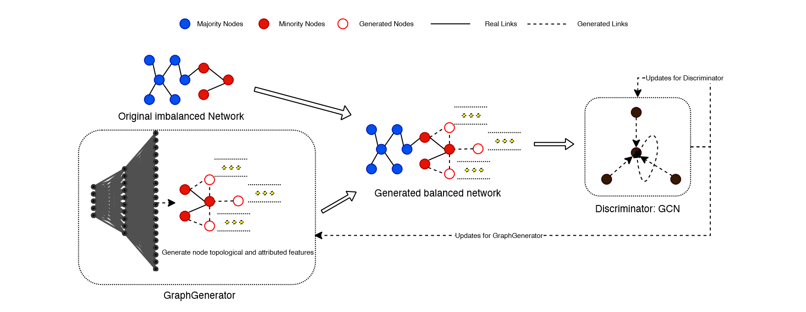

ImGAGN¶
ImGAGN:Imbalanced Network Embedding via Generative Adversarial Graph Networks
-
motivation: GNN GNN
-
: GAN 
-
Graph GeneratorMLP\(n_g = n_{\text{majority}} - n_{\text{minority}}\) loss
\[ \begin{align*} \mathcal{L}_{\text{gen} } &=\mathcal{L}_{\text{rf} }+\mathcal{L}_{\text{mi}}+\mathcal{L}_{\text{di} }+\mathcal{L}_{\text{re} } \\ &=\sum_{i=1}^{n_{g}}-q_{i} \log \operatorname{Pr}\left(\widehat{y_{i}}=\text { real } \mid \vec{x}_{i}\right) \\ &+\sum_{i=1}^{n_{g}}-q_{i} \log \operatorname{Pr}\left(\widehat{y_{i}}=\text { minority } \mid \vec{x}_{i}\right) \\ &+\frac{1}{\left|n_{g}\right|} \sum_{i=1}^{n_{g}} \sum_{j=1}^{n_{\min }}\left\|\vec{x}_{i}-\vec{x}_{j}\right\|_{2}^{2} \\ &+\alpha|| \Theta \|_{2}^{2} \end{align*} \]\(\mathcal{L}_{\text{rf} }\) \(\mathcal{L}_{\text{mi}}\) balance \(\mathcal{L}_{\text{di} }\)
-
discriminator GCN GNNs \(\{(real, minority), (real, majority), (fake, minority)\}\)
\[ \begin{align*} \mathcal{L}_{\text {dis }}&=\mathcal{L}_{f a}+\mathcal{L}_{c l}+\mathcal{L}_{m m}+\mathcal{L}_{\text {ree }} \\ &=\sum_{i=1}^{n_{g}+n_{m i n}+n_{m a j}}-\left[q_{i} \log \left(\operatorname{Pr}\left(\widehat{y_{i}}=\text { fake } \mid \vec{x}_{i}\right)\right) +\left(1-q_{i}\right) \log \left(1-\operatorname{Pr}\left(\widehat{y_{i}}=\text { fake } \mid \overrightarrow{x_{i}}\right)\right)\right] \\ &+\sum_{i=1}^{n_{g}+n_{\text {min }}+n_{m a j}}-\left[q_{i} \log \left(\operatorname{Pr}\left(\widehat{y_{i}}=\text { minority } \mid \vec{x}_{i}\right)\right) +\left(1-q_{i}\right) \log \left(1-\operatorname{Pr}\left(\widehat{y_{i}}=\text { minority } \vec{x}_{i}\right)\right)\right] \\ &-\sum_{i=1}^{n_{m i n}} \sum_{j=1}^{n_{m a j}}\left\|\overrightarrow{h_{i}}-\overrightarrow{h_{j}}\right\|_{2}^{2} \\ &+\beta\|\Omega\|_{2}^{2} \end{align*} \]\(\mathcal{L}_{\text{fa} }\) \(\mathcal{L}_{\text{cl} }\)\(\mathcal{L}_{\text{mm} }\)
-
: ImGAGNGAN GraphGenerator